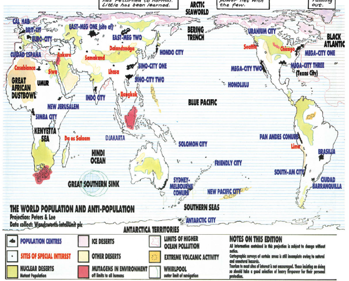
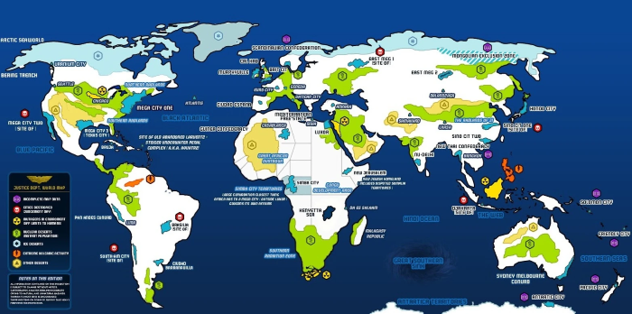
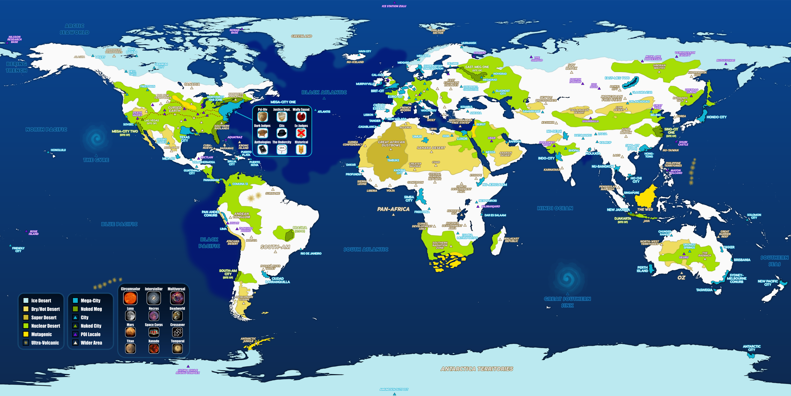
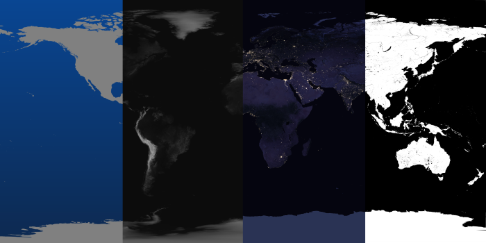
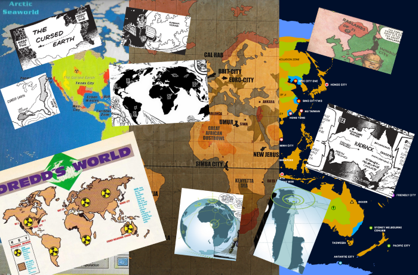
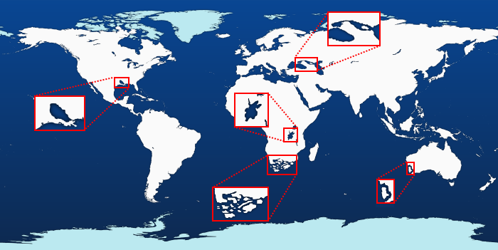

The Dreddverse World Map project was heavily inspired by previous mapping projects, all of which use as their basis the prog 701 Shamballa map by Arthur Ranson, which you can see on the Judge Dredd Wiki's List of Mega-States page. Here's a slightly smaller version:
At the top of the List of Mega-States page, there's a map by Jas Smith. I liked the color scheme of Jas's map so much that I used the same color scheme as the basis for my version. Oh - and the little location triangles were another design feature I borrowed. This is the Jas Smith map:
When I thought of adding interactivity to the map (where you can click on a location to see which stories are set there), I thought of using the Jas Smith map - but I soon found myself adding new locations (like Comuna 13), and then sometimes disagreeing with locations (like Aquatraz) - and so a project was born that resulted in a busier map that tries to include everything:
The new starting point was a basic vector map, which I sourced from Vemaps.com. This slightly mad projection (equirectangular) works well if you wrap the map around a sphere in 3D, and also marries to various NASA maps. Here is a mock-up of the base vector map and then maps of height, night and specularity (shiny, watery-bits) - all of which are helpful in figuring out where things might reasonably be:
There are lots of other map sources: from Pan-African Judges, Oz, the Mongoose RPG map (partially ignored, tbh), the Dredd 2012 movie, the Dredd's World mega-special map, another online vector version (by Kowalsky on the 2K forum), the Cursed Earth, the Judge Child, a couple from Judgement Day and then some more modern ones from Regicide and the Orlok solo-strip:
The downloaded vector map didn't include any lakes, and then there was also some future-Earth remodeling to do, in terms of decimating South Africa, calving off Perth Island, creating the fictional lakes of Louisiana and the Kenyetta Sea, and creating a new waterway linked the Caspian and Black Seas. (It looks like Ranson also remodeled the Mediterranean coast and the Great Lakes of North America, but maybe he just had a shaky pen?)
Next was adding in major geographical features (super-polluted oceans, deserts, nuclear deserts, permanent mega-whirlpools and super-volcanoes), followed by population centers & places of interest (267 of 'em) and then finally a whole bunch of labeling:

And that's before I started the coding - but that's another story (which isn't best told in pictures).